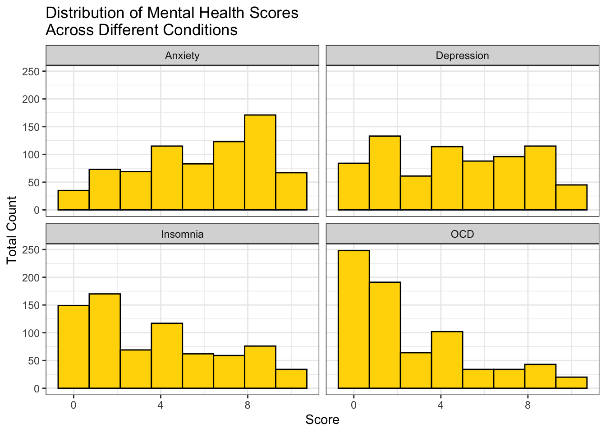
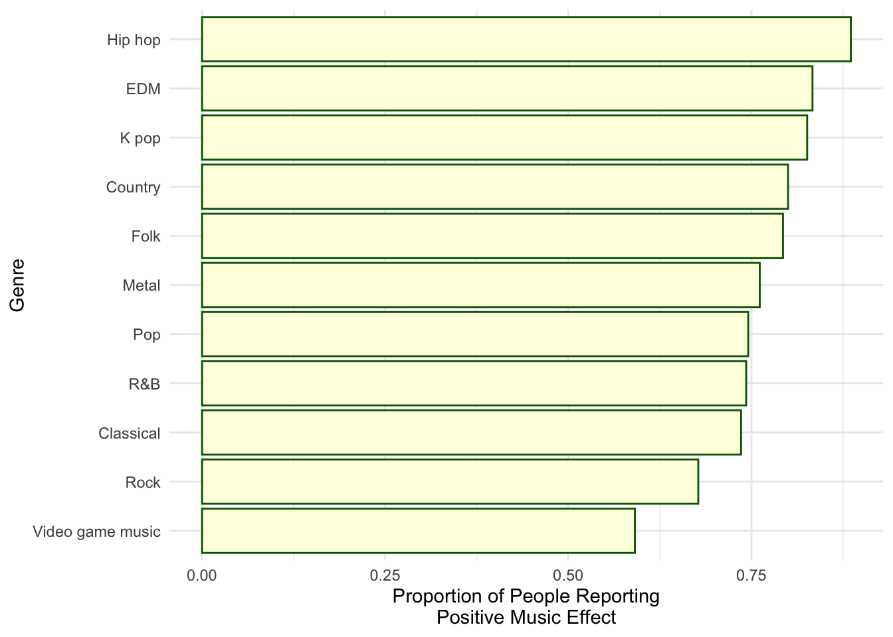

library(tidyverse)
library(here)
library(broom)
library(modelr)
music_health <- read_csv(here("data/music_mentalhealth.csv"))
music_health$`Music effects` <- as.factor(music_health$`Music effects`)Introduction
The following data set I am working with, is from the results of a self-reported survey on the effects of music on a person’s mental health status. The data set is shown below..
head(music_health)# A tibble: 6 × 33
Timestamp Age Primary streaming se…¹ `Hours per day` `While working`
<chr> <dbl> <chr> <dbl> <chr>
1 8/27/2022 19:29:… 18 Spotify 3 Yes
2 8/27/2022 19:57:… 63 Pandora 1.5 Yes
3 8/27/2022 21:28:… 18 Spotify 4 No
4 8/27/2022 21:40:… 61 YouTube Music 2.5 Yes
5 8/27/2022 21:54:… 18 Spotify 4 Yes
6 8/27/2022 21:56:… 18 Spotify 5 Yes
# ℹ abbreviated name: ¹`Primary streaming service`
# ℹ 28 more variables: Instrumentalist <chr>, Composer <chr>,
# `Fav genre` <chr>, Exploratory <chr>, `Foreign languages` <chr>, BPM <dbl>,
# `Frequency [Classical]` <chr>, `Frequency [Country]` <chr>,
# `Frequency [EDM]` <chr>, `Frequency [Folk]` <chr>,
# `Frequency [Gospel]` <chr>, `Frequency [Hip hop]` <chr>,
# `Frequency [Jazz]` <chr>, `Frequency [K pop]` <chr>, …The potential variables of interest for this post will be Hours per day, While working, Exploratory, Fav genre,Frequency [Classical], Frequency [Country], Frequency [EDM], Frequency [Folk], Frequency [Gospel], Frequency [Hip hop], Frequency [Jazz], Frequency [K pop],Frequency [Latin], Frequency [Lofi], Frequency [Metal], Frequency [Pop], Frequency [R&B], Frequency [Rap], Frequency [Rock], Frequency [Video game music], Anxiety, Depression , Insomnia, OCD, and Music effects. In total the data set holds 736 observations, each one being an individual who completed the survey.
The question of interest investigated will be, “Did music improve the mental health conditions of these respondents?
Data Context
Originally, the data was collected by Catherine Rasgaitis, who used a Google Form. The form was posted across social media platforms such as, Reddit and Discord. Posters and business cards were displayed and handed out the public in libraries, parks, and other public locations. The author of the data is Catherine Rasgaitis, who studies Computer Science at the University of Washington. The data was collected from 07/27/2022 - 11/08/2022. From individuals from all over the world.
From that point, the data made it’s way onto Kaggle.com, where I got a hold of it. The following URL is the main page of the data set, https://www.kaggle.com/datasets/catherinerasgaitis/mxmh-survey-results.
Visualizatons
# Histogram of mental health variables
music_effect <- music_health |>
pivot_longer(cols = c(Anxiety, Depression, Insomnia, OCD), names_to = "Mental Condition", values_to = "Score")
ggplot(data = music_effect, aes(x = `Score`)) + geom_histogram(fill = "gold", color = "black", bins = 8) + facet_wrap(~`Mental Condition`) + theme_bw() + labs(y = "Total Count", title = "Distribution of Mental Health Scores\nAcross Different Conditions")
From the histograms, you can see that the Depression and Anxiety distributions are nearly even, except for a slight left skew in Anxiety. The Insomnia distribution seems to also have a minimal right skew and the OCD distribution has an obvious right skew.
music_plot <- music_health |>
group_by(`Fav genre`) |>
filter(n() >= 25, !is.na(`Music effects`)) |>
mutate(positive_ind = if_else(`Music effects` == "Improve", 1,0)) |>
summarise(positive_prop = sum(positive_ind)/ n()) |>
arrange(desc(positive_prop)) |>
mutate(`Fav genre` = fct_reorder(.f = `Fav genre`, .x = positive_prop))
ggplot(data = music_plot, aes(x = `Fav genre`, y = positive_prop)) +
geom_bar(stat = "identity", fill = "lightyellow", color = "darkgreen") +
theme_minimal() +
labs(y = "Proportion of People Reporting\nPositive Music Effect", x = "Genre") +
coord_flip()
In genre’s that were listed as a favorite by 25 or more people, hip-hop had the highest proportion of people reporting that they had like felt their mental health had improved because of the music. On the contrary, people who had video game music as their favorites, reported the lowest proportion in the group.